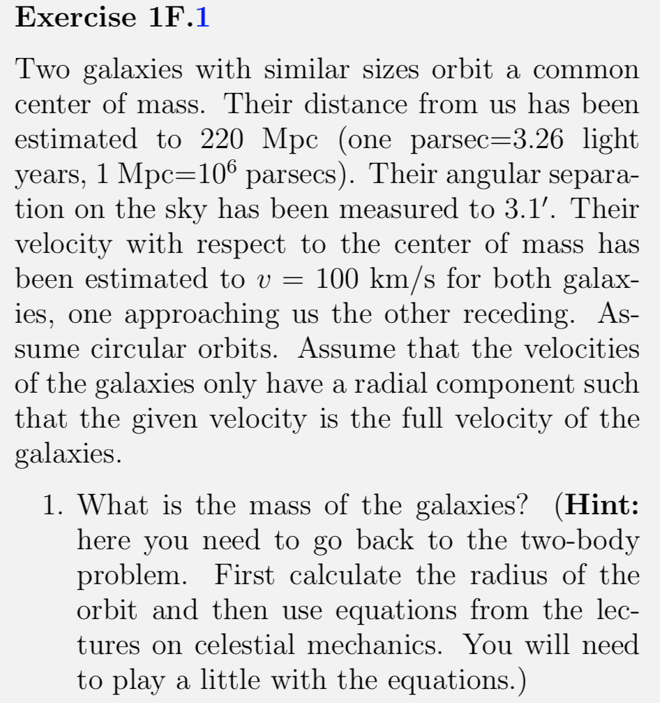

Du må bruke presentasjonsmodus/fullskjermsvisning for å lese denne, men du skal ikke bruke frem/tilbake-knappene, KUN knappene som dukker opp på sliden for å ta deg videre! Ofte må du laste filen ned til maskinen din og åpne den der for å få til dette. Merk at noen knapper vil åpne nettskjema, videoer eller andre ressurser i internettbrowseren din. Når du gjør det riktig, skal du kun se en side av gangen, og når du trykker på knappene som dukker opp på skjermen så skal disse ta deg frem/tilbake i dokumentet. Du vil miste mye læringsutbytte hvis du ser flere slides av gangen. Får du det ikke til, spør foreleser/gruppelærer!
Dette er en erstatning for forelesningen i emnet. Har du gått skikkelig gjennom disse interaktive forelesningsnotatene så trenger du ikke å lese de fulle forelesningsnotatene (med unntak av oppgavene bak). All informasjonen du trenger, får du her. Du kommer til å få mange grublespørsmål og diskusjonsoppgaver, det er meningen at disse skal gjøres i grupper av minst 2, maks 4 studenter. Det er defor sterkt anbefalt at dere sitter sammen i grupper når dere går gjennom disse interaktive forelesningsnotatene, du vil få betydelig mer utbytte av dem på den måten. En god ide kan være å bli enige om å treffes til den faste forelesningstiden og bruke forelesningslokalet som kommer til å være resevert til dette. Hvis du har kommentarer ris/ros til disse forelesningsnotatene eller til emnet, trykk på 🙂 🙁 knappen som du finner på alle sider.
Forrige side Velkommen til del 1F! Her skal vi ta en gjennomgang av alle de kjente elementærpartiklene som bygger opp universet vårt og så skal vi spekulere litt i om det finnes noen ukjente. Vi skal se på ’mørk materie’-begrepet, hvor det kommer fra, hva som gjør at vi trenger det og hva slags materie det kan være snakk om. Er du klar? Neste side
I oversikten over ser du alle kjente elementærpartikler i den såkalte standardmodellen i partikkelfysikk untatt den såkalte Higgspartikkelen. Før du går videre bør du nå gå inn i de vanlige forelesningsnotatene for del 1F og lese avsnitt 1 “Some particle physics”. Det har ikke meningen at alt dette blir repetert her, så bedre at du leser denne godt. På de neste sidene skal du bli testet i det du har lest. Prøv å pugge dette stoffet nå slik at du klarer å ta testen uten å slå opp! Dette har dukket opp flere ganger på eksamen og i prosjektet kan du få bruk for å beskrive dette med egne ord. Har du pugget dette en gang vil det sitte mye fortere neste gang.Neste side
Forrige side🙂 🙁Elementærpartikler Det var feil! Sjekk at du har kontroll på forskjellen mellom fermioner og bosoner, og hvilke partikler som tilhører hver gruppe. Det letteste er å lære hvilke partikler som er kraft-overførende, de pluss Higgspartikkelen er de eneste bosonene blant alementærpartiklene
Forrige side🙂 🙁Elementærpartikler Det var feil! Sjekk at du har kontroll på forskjellen mellom leptoner og hadroner på den ene siden, og hadronene som deles opp i mesoner og baryoner på den andre. Du må også vite hvor mange kvarker protoner og nøytronene består av og dermed hva slags type partikler disse er.
Forrige side🙂 🙁Elementærpartikler Det var feil! Sjekk at du har kontroll på leptonnummer, spinn og elektrisk ladning. Det er ikke forventet at du skal huske nøyaktig elektrisk ladning til alle kvarkene, men vite at ladningene er i 1/3-deler eller 2/3-deler.
Forrige side🙂 🙁Elementærpartikler Flott, bra jobba! Merk at du er forventet å ha kontroll på leptonnummer, spinn og elektrisk ladning. Det er ikke forventet at du skal huske nøyaktig elektrisk ladning til alle kvarkene, men vite at ladningene er i 1/3-deler eller 2/3-deler. Neste side
Forrige side🙂 🙁Elementærpartikler Fikk du det riktig? Hvis ikke, ta en runde til med repetisjon om elementærpartikler så det sitter skikkelig! Neste side
Forrige side🙂 🙁Galaktiske rotasjonskurver Før vi skal se på galaktiske rotasjonskurver (hva nå enn det er ...) så skal vi se hvordan en typisk galakse ser ut. Vi skal nærmere bestemt se på en spiralgalakse slik som vår egen Melkevei som et eksempel:
Dimensjonene som er tegnet inn gjelder for Melkeveien som er en typisk spiralgalakse. Den består av en rund tynn skive (∼1000 lysår tykkelse) med stjerner som vi kaller galakseskiven. Den er omkring 100.000 - 200.000 lysår i diameter. I sentrum er det en kuleformet ansamling av stjerner som kalles galakseutbulingen med diameter omkring 10.000 lysår. Stjernene går i bane i galakseplanet omkring det supermassive sorte hullet i sentrum av galaksen. Det er noen hundre milliarder stjerner i Melkeveien og stjernetettheten i en typisk galakse faller kraftig av med avstand r fra sentrum som ρstar(r) ∝ r−3.5. Neste side
Tilbake til spørsmålet på skjemaet. Under ser du en galakse:
Det er ikke helt urimelig å anta at alle stjernene i denne spiralgalaksen befinner seg i det samme planet, galakseplanet, og at de går i bane rundt det sorte hullet i sentrum. Anta videre at alle stjerner går i sirkelbaner som alle ligger i dette galakseplanet. Vi antar altså at all materie i galaksen ligger i en tynn skive. Vi skal ta for oss en stjerne i avstand r fra sentrum av galaksen. Hva blir gravitasjonskraften på denne stjerna fra resten av galaksen? Trykk her når du har forslag!
Husker du fra utledningen av likningen for hydrostatisk likevekt? Gravitasjonskreftene fra et kulesymmetrisk skall er 0 innenfor skallet. Det samme gjelder i 2 dimensjoner, altså for en skive, så lenge objektet vi ser på beveger seg kun i skiven. Vi får altså ingen tyngdekraft fra stjernene på utsiden av radius r.Neste side
Helt på samme måte, så får vi vanlig Newtonsk gravitasjonskraft $$F=G\frac{M(r)m}{r^2}$$ hvor igjen M(r) er den totale massen til galaksen på innsiden av radius r og m er massen til stjerna vi ser på. Dermed har vi for denne stjerna tilnærmet det klassiske 2-legeme-problemet, hvor massen på legemene er M(r) og m. Da vet vi at resultatet gir oss Keplers lover, MEN de må anvendes individuelt for hver avstand r fra sentrum. Jo lenger utover i galaksen du kommer, jo større blir massen M(r). Dette er en stor forskjell fra planetsystemer der massen M av stjerna er den samme for alle planeter. I tillegg vil stjernene nær sentrum kunne være sterkt påvirket av andre objekter i nærheten.
Men hvis vi nå ser på de få stjernene som befinner seg helt i utkanten av galaksen, så er situasjonen en annen. Her er det få stjerner og totalmassen innenfor r endrer seg svært lite ettersom vi går videre utover fra galaksen (r øker videre). For stjernene i utkanten av galaksen så vil massen M(r) = M der M er massen til hele galaksen være en svært god tilnærmelse. Da kommer vi til et annet spørsmål fra skjemaet. Hvilken banehastighet har disse stjernene?? Husk at vi antar sirkelbaner, og husk at tyngdekrafta er den vanlige Newtonske med en masse M (hele galaksens masse) i sentrum. Hva må den bli? Trykk her når du har forslag!
Ganske riktig ja, da kan vi bruke god gammeldags sentripetalakselrasjon som gir $$v=\sqrt{\frac{GM}{r}}$$ for alle stjerner i de ytre delene av galaksen. Neste side
Forrige side🙂 🙁Galaktiske rotasjonskurver
Hvis vi nå observerer stjernehastigheter på forskjellige avstander r fra sentrum, der r er så stor at vi er sikker på at nesten hele galaksens masse er innenfor (i de ytterste delene er det svært få stjerner som kan bidra til totalmassen), så skulle vi for disse få en kurve som følger modellen $$v(r)=\sqrt{\frac{GM}{r}}\ \ \ \ \mathrm{for\ r\ stor\ nok}$$
I figuren til venstre ser du denne modellen tegnet inn (nederste kurve). Den øverste kurven derimot, er typisk for faktiske observasjoner av stjerne hastigheter!Helt forskjellig fra den teoretiske modellen! Vi ser at den faktiske kurven er nesten flat og ikke følger en $\sqrt{1/r}$ modell. Neste side
Forrige side🙂 🙁Galaktiske rotasjonskurver Hva kan forårsake et så stort avvik mellom teori og observasjon?Det er helt klart at noe er galt med modellen, men hva? Hvilken antakelse har gått galt? Før du går videre: Tenk gjennom alle antakelser vi har gjorde da vi kom frem til det teoretiske uttrykket. Hvilken tror du kan være gal og som kan gi oss en slik feil?Jeg har gått gjennom alle antakelsene og tenkt
Forrige side🙂 🙁Galaktiske rotasjonskurver
I modellen vår $$v(r)=\sqrt{\frac{GM}{r}}\ \ \ \ \mathrm{for\ r\ stor\ nok}$$ så avtar hastigheten med $\sqrt{1/r}$ fordi stjernene kommer lenger og lenger unna massesenteret til galaksen. Siden M ikke øker (nevneverdig) så må gravitasjonskrafta avta med avstanden! Dermed blir hastigheten lavere med r (Keplers 2. lov). Men observasjonene viser altså at hastigheten ikke avtar med avstanden. Tyngdekreftene på stjernene lenger ut må dermed være større enn vi trodde. Hvis vi ser på Newtons tyngdelov så er det kun massen M som her evt. kan øke slik at tyngdekraften blir større og vi dermed får større sentripetalakselrasjon!Hvis totalmassen M(r) innenfor en radius r øker kraftig med r også i de ytre delene av galaksen så kan dette forklare at den observerte rotasjonskurven (lær til dette order, det brukes mye: stjernehastighet som funksjon av avstand r fra galaksesenter) ikke stemmer overens med den teoretiske. MEN det er bare det at vi ikke ser noen stjerner eller annen form for synlig materie i ytterkantene som kan forklare at M(r) skal øke.Neste side
Forrige sideHang du med nå eller?Hvis ikke, gå en side eller to tilbake til du er helt sikker på at du forstår!Jeg henger godt med!
Forrige side🙂 🙁Galaktiske rotasjonskurver Det er her hypotesen om mørk materie kommer inn. For at M(r) skal kunne øke nevneverdig med r i de ytre delene av galaksen, sa må det finnes materie der som ikke er synlig, som ikke avgir lys, derav mørk materie Du kan se det hele animert her, hvor du ser en galakse roterer med og uten mørk materie (se rotasjonskurvene under galaksen). Legg merke til stjernehastigheten ytterst! Neste side
Forrige side🙂 🙁Mørk materie Skulle du ha bittelitt tid til overs og lyst til å se en repetisjon av hva vi akkurat snakket om, med litt andre ord og med litt info om hvordan målinger gjøres for å måle rotasjonskurven til Melkeveien, ta en titt på denne 3 minutters Youtube-videoen.Neste side
Vi begynner med å kikke på en av ukeoppgavene: 
Finner du massen til galaksene? Kikk deretter på deloppgave 2:
Gjør du dette riktig så skal du få omkring 9 × 1011 solmasser i deloppgave 1 når du kun beregner massen fra kun fra gravitasjonskraften mens du får 2 × 1011 solmasser når du bruker den synlige massen. Hvis du er usikker på hvordan disse oppgavene løses, ta en kikk på denne videoen .MERK feil i videoen: det er 1.9 × 1017 sekunder ikke år! Men slutt-resultatet blir riktig!Neste side
Forrige side🙂 🙁Mørk materie Hva betyr dette? Du fant en mye større masse til 2-galaksesystemet hvis du brukte tyngdekraften til å måle massen enn hvis du telte massen til de synlige stjernene. Igjen så er dette et typisk resultat. Når man ser på galaksers bevegelse omkring hverandre i en galaksehop så finner man samme resultat som når vi ser på rotasjonskurven til enkeltgalakser! Husker du forresten hva en galaksehop er??? Det er noen 100 eller noen 1000 galasker som går i bane omkring et felles massesenter. Dette er de største strukturene i universet. Neste side
Man har også en helt uavhengig måte å måle massen til en galaksehop på ved å se på lysavbøyning av lys fra meget fjerne objekter som ligger langt bak galaksehopen. I bildet her er prikkene galakser i en galaksehop mens buene er det avbøyde lyset fra fjerne objekter. Lyset fra det fjerne objektet passerer gjennom hopen, men blir avbøyd på grunn av tyngdekrafta i galaksehopa. Ved å se på avbøyninga til lyset kan man ’veie’ galaksehopa og på den måten finne massen til hopa. Denne typen målinger bekrefter det som man finner ved andre metoder: Akkurat som enkeltgalaksene så innholder også galaksehopene mye mer masse enn den synlige massen.Neste side
Forrige side🙂 🙁Mørk materie Observasjoner av galakser og galaksehoper viser at omkring 85% av massen i universet er mørk materie. Men hva er nå denne mørke materien??? Kan det være døde stjerner/planeter, andre mørke objekter??Observasjoner av den kosmiske bakgrunnsstrålingen viser at den mørke materien mest sannsynlig ikke består av partikler fra standardmodellen men sannsynligvis er nye og ukjente partikler utenfor standardmodellen for partikkelfysikk. Partikler som aldri eller svært sjeldent reagerer med de kjente partiklene på noen annen måte enn gjennom gravitasjon!Neste side
Størrelsen på fluktuasjonene i den kosmiske bakgrunnsstrålingen bekrefter at det trengs omkring 85% mørk materie for å danne de strukturene vi idag ser i universet.
Samtidig så setter nukleosyntesen, perioden i universets tidlige historie da de første atomkjernene ble dannet, en grense for hvor mye ’vanlig materie’ som kan eksistere. Hvis det hadde eksistert betydelig mer vanlig materie (som reagerer med partikler i standardmodellen gjennom andre krefter enn gravitasjon), så hadde vi hatt en helt annen sammensetning av grunnstoffer i universet idag.
Dette forteller oss at den mørke materien må bestå av partikler som reagerer svært svakt med andre partikler, unntatt gjennom gravitasjon da vi jo ’ser’ den mørke materien gjennom gravitasjonspåvirkning av andre legemer. Hvis en partikkel skal sende ut/absorbere fotoner, må den kunne virke med elektromagnetiske krefter, gjør den ikke det, så blir den ’mørk’. I standardmodellen har vi kun en slik partikkel som virker svært svakt gjennom andre krefter enn gravitasjon: nøytrinoet. Kan mørk materie være nøytrinoer???Neste side
Forrige side🙂 🙁Mørk materie Mørk materie kan kategoriseres bl.a. som:
Varm mørk materie (Warm Dark Matter WDM): Dette er lette mørk materiepartikler med hastigheter nær lyshastigheten. Denne typen partikler vil oppføre seg tilnærmet som lys pga. sin høye hastighet. Nettopp nøytrinoer er en slik mulig WDM-kandidat.
Kald mørk materie (Cold Darm Matter CDM): Dette er tyngre partikler med lavere hastigheter og vil dermed oppføre seg mer som bl.a. protoner, elektroner og atomkjerner, bortsett fra at de da svært sjelden/ikke på noen måte reagerer med disse eller andre partikler i standardmodellen.
...og så finnes selvfølgelig mellomtingen LWDM (Luke Warm Dark Matter). Men hvordan kan vi skille mellom disse to teoriene? Gitt at de kun vekselvirker med gravitasjon og i svært liten/ingen grad med de andre fundamentale kreftene, hvordan kan vi gjennom observasjoner avgjøre f.eks. om vi har WDM eller CDM? Tenk deg godt om før du blar om!Neste side
Forrige side🙂 🙁Mørk materie Kunne man f.eks. bruke observasjonene vi har av galaktiske rotasjonskurver? Eller observasjonene av galaksenes hastighet i galaksehoper? Isåfall, på hvilken måte ville disse observasjonene være forskjellige avhengig av typen mørk materie? Diskuter og se om dere får noen ideer før du går videre til ...... neste side
Forrige side🙂 🙁Mørk materie På bildet av galaksen ser du også en blå ’sky’ inntegnet. Denne illustrerer hvordan den mørke materien har klumpet seg rundt galaksen. Ved å kartlegge fordelingen av mørk materie i en galakse har man funnet ut av den mørke materien ligger i det vi kaller en halo omkring galaksen. Det er en tilnærmet kulesymmetrisk sky av mørk materie med radius som er flere ganger større enn radiusen til galaksen som man finner ved å observere fordelingen av stjerner og gass. Den synlige delen av galaksen ligger i sentrum av denne haloen. ... neste side
Forrige side🙂 🙁Mørk materie Vil ikke tetthet og tetthetsvariasjoner av mørk materie i en slik halo være forskjellig avhengig av hvilken type mørk materie man har? Hvordan tror du WDM med partikler nær lyshastighet ville klumpet seg slik? Hvis vi nå kan lage en modell av tetthet av mørk materie som funksjon av r, altså ρ(r), utifra hastighetsmålingene vi har i galaksen, så vil det være et viktig redskap i å kunne forstå hva slags mørk materie vi har ved å se hvordan den mørke materien kan klumpe seg ifølge modellen ρ(r) vi finner. Det skal vi se litt på nå...
Forrige side🙂 🙁Modellering av mørk materie-haloer
Vi ønsker altså å finne et uttrykk for ρ(r) utifra hastighetsfunksjonen v(r). Vi antar altså kulesymmetri siden tettheten kun er en funksjon av r. Dette er rimelig siden vi har observert at den mørke materien ligger i en kulesymmetrisk halo og ikke i en skive slik som den vanlige materien gjør i en spiralgalakse. Den mørke materien dominerer, så det er en god antakelse og kun se på den mørke materien her. Tettheten i avstanden r fra sentrum av galaksen er vel egentlig: $$\rho(r)=\frac{\mathrm{masse\ av\ infinitesimalt\ kuleskall}}{\mathrm{volum \ av\ infinitesimalt\ kuleskall}}=\frac{dM}{4\pi r^2\,dr}=\frac{1}{4\pi r^2}\frac{dM}{dr}$$ der vi altså ser på et infinitesimalt kuleskall omkring sentrum av galaksen i avstand r med tykkelse dr. Massen til kuleskallet betegner vi dM og tykkelsen dr. Kan du set at dM/dr her egentlig er den deriverte av funksjonen M(r) som var den totale massen innenfor en radius r? Altså at $$\frac{dM}{dr}=\frac{dM(r)}{dr}$$Ja, det ser jeg!Blir det sånn da?
Forrige side🙂 🙁Modellering av mørk materie-haloer Det er vel sånn at massen dM av det tynne kuleskallet må være forskjellen mellom massen M(r+dr) og massen M(r)? Dermed har vi vel altså at dM = M(r+r) − M(r) og fra definisjonen av derivert har vi da at $$\frac{dM}{dr}=\frac{dM(r)}{dr}$$ Vi fant for en del sider siden en sammenheng mellom observert hastighet v(r) og total masse M(r) på innsiden av r ved hjelp av sentripetalakselrasjon. Stokker vi om på det uttrykket får vi $$M(r)=\frac{1}{G}v^2(r)r$$ Vi trengte dM/dr for å finne tettheten, så da deriverer vi ivei med produktregel og kjerneregel: $$\frac{dM(r)}{dr}=\frac{1}{G}\left(2v(r)r\frac{dv}{dr}+v^2(r)\right)$$ Insatt i uttrykket for ρ(r) fra forrige side så har vi da: $$\rho(r)=\frac{1}{4\pi r^2}\frac{dM}{dr}=\frac{1}{4\pi r^2G}\left(2v(r)r\frac{dv}{dr}+v^2(r)\right)$$Enig?Hvis du er usikker på det vi har gjort så langt, spør foreleser!Neste side
Forrige side🙂 🙁Modellering av mørk materie-haloer
Vi fikk: $$\rho(r)=\frac{1}{4\pi r^2G}\left(2v(r)r\frac{dv}{dr}+v^2(r)\right)$$ Ser du at hvis du nå har observert stjernehastighet i en avstand r og dermed fått observert funksjonen v(r), så kan du nå finne tetthetsprofiel ρ(r) av mørk materie (pluss lysende, vi ser jo på total masse, men den mørke dominerer) i galaksen? Du trenger kun å sette inn observert hastighet som funksjon av r samt den deriverte av denne.
Nå så vi jo at v(r) blir nesten flat i ytre deler av galaksen. Dermed blir den deriverte av hastigheten 0 i disse delene av galaksen og vi får: $$\rho(r)=\frac{v^2(r)}{4\pi r^2G}$$ som er enklere å regne med. I oppgavene i dette kurset skal du bruke dette uttrykket også i de sentrale delene selv om det blir veldig omtrentlig.Neste side
Forrige side🙂 🙁Modellering av mørk materie-haloer
Vi har for de ytre delene av galaksen at $$\rho(r)=\frac{v^2(r)}{4\pi G r^2}$$ Ser du at tettheten faller som ρ(r) ∝ 1/r2 her? (husk at v(r) er tilnærmet en konstant i disse delene av galaksen) Tettheten av stjerner i en galakse faller omtrent som ρstar(r) ∝ 1/r3.5, altså mye raskere en den mørke materien. Det forklarer resultatet vårt fra tidligere: fordelingen av mørk materie er mye mer utbredt enn fordelingen av lysende materie!. Det er fortsatt mye mørk materie igjen i de ytre delene av den synlige delen av galaksen. Dermed øker M(r) enda kraftig når man går videre utover og det ble feil å anta at M var en konstant størrelse. Men hva skjer med tettheten i sentrum utifra dette uttrykket? Divergerer det ikke? Observasjoner viser at hastigheten v(r) er omtrent proporsjonal med r i sentrale deler, altså v(r) ∝ r. Da gir formelen oss at tettheten i sentrum er tilnærmet konstant. (ser du det?)Neste side
Forrige side🙂 🙁Modellering av mørk materie-haloer
Ved å bruke denne metoden samt bl.a. gravitasjonslensing som vi snakket om tidligere har man kommet frem til en generell tetthetsprofil som passer for de fleste galakser: $$\rho(r)=\frac{\rho_0}{1+(r/R)^2}$$ der ρ0 og R er konstante størrelser som varierer fra galakse til galakse, Disse størrelsene må man tilpasse fra dataene for en gitt galakse, dette skal du få prøve i ukeoppgavene. Men kan du gi en tolkning av ρ0 og R? Lek litt med uttrykket og se om du finner hva ρ0 og R egentlig betyr...Når du har en ide om hva ρ0 og R er, trykk her
Forrige side🙂 🙁Modellering av mørk materie-haloer
Hvis du ikke fikk det helt til, et par hint:
Kan du finne en verdi for r, altså en avstand fra sentrum av galaksen som gir en enkel sammenheng mellom ρ(r) og ρ0? Dette skulle gi deg tolkningen av ρ0
Det kan virke som R er en eller annen avstand, spesielt når vi ser hva slags enheter den må ha. Hva er ρ(r) når avstanden r = R? Fant du en tolkning av avstanden R?
R er avstanden fra sentrum der tettheten har falt til halvparten av tettheten i sentrum?
Hvis du ikke ser det, spør foreleser! Ser du dermed at når r → 0 så går ρ mot den konstante tettheten ρ0? Og når r blir veldig stor så får vi tilbake ρ(r) ∝ 1/r2 som vi fant over? Men hva betyr nå disse resultatene for forståelsen av hva den mørke materien er??Neste side
Forrige side🙂 🙁Hva er mørk materie?
Vi nevnte tidligere at det finnes en partikkel i stnandardmodellen som kunne passe som mørkt materie: nøytrinoene vekselvirker veldig svakt med annen materie på annen måte enn gjennom gravitasjon. Men nøytrinoene er lette og ville dermed ha høy hastighet og være WDM. Alle tester så langt, og da blant annet av klumpingen til den mørke materien slik som vi akkurat diskuterte, viser at mørk materie mest sannsynlig er CDM, kald mørk materie. Ofte kjører man store partikkelsimuleringer (alla den du gjorde med partikkel i boks, men med en stor andel av universet) og ser hvordan forskjellige typer simulert mørk materie klumper seg og sammenlikner med profilen til f.eks. en galakse slik som vi akkurat utledet. På den måten kan vi teste forskjellige typer teorien. Men hvis nøytrinoene er den eneste partikkelen i standardmodellen i partikkelfysikk som kunne passe, men som da ikke passer likevel......så betyr det at...
Forrige side🙂 🙁Hva er mørk materie? ...mørk materie må være en ny og enda ukjent partikkel. En partikkel som enda ikke er en del av standardmodellen. Teoretisk partikkelfysikk har i mange tiår allerede forutsagt eksistensen av mange forskjellige typer slike partikler ved å se på symmetrier i de matematiske teoriene. En av de mange mulige teoretiske utvideleser av standardmodellen er den såkalte supersymmetriske modellen. I den modellen har ethvert fermion en supersymmetrisk partnerpartikkel som er et boson, og hvert boson en supersymmetrisk partnerpartikkel som er et fermion (litt på samme måte som alle partikler har en antipartikkel med motsatt ladning og leptonnummer). Partneren til protonet ville vært et sproton, partneren til elektronet et selektron og parteneren til fotonet et fotino. Selv om denne teorien har eksistert i veldig lang tid, så har man så langt ikke lykkes i å bekrefte at disse partiklene faktisk eksisterer. Men hvis de eksisterer så er mange av disse forutsagt å ha de egenskapene som vi ser at CDM har. I tilleg til supersymmetri finnes det også en rekke andre teorier som forutsier utvidelser av standardmodellen med partikler som passer til å være CDM, men så langt er altså ingen av disse teoriene bekreftet. MEN...
Forrige side🙂 🙁Hva er mørk materie? kanskje det finnes en annen mulighet??? tenk tilbake på utledningen av rotasjonskurvene: $$v(r)=\sqrt{\frac{GM}{r}}$$Som tydelig er feil ifølge observasjoner, men hvilke antakelser gjorde du her?En mulig løsning var at antakelsen om at M er konstant ettersom du går utover er feil. Men hvis denne ikke er feil? La oss anta at M virkelig ikke endrer seg når du går utover, altså at vi ikke har noe usynlig mørk materie der. Hva annet kan være galt og som kunne gi en flat rotasjonskurve?Jeg har kanskje et forslag...
Forrige side🙂 🙁Hva er mørk materie?
Hva om Newtons gravitasjonslov er feil? Newtons gravitasjon kommer jo bare fra Einsteins gravitasjonslov (den skal vi høre om senere i kurset) for svake gravitasjonsfelt. Så hva som Einsteins gravitasjonslov (også kjent som den generelle relativitetsteorien) er feil???. Vi har jo strengt tatt bare testet gravitasjonsloven grundig over korte avstander, dvs. solsystem-størrelse. Vi har aldri direkte testet gravitasjonsloven over virkelig store avstander. Kan det være at det vis er er at gravitasjonsloven ser forskjellige ut for store avstander? Neste side
Forrige side🙂 🙁Hva er mørk materie?
Det finnes også en annen grunn til at man studerer muligheten for at Einsteins gravitasjonslov må utvides. Det finnes nemlig en annen usynlig komponent i universets sammensetning som heter mørk energi. Vi skal ikke snakke om den i dette kurset, men den får universet til å utvide seg fortere og fortere. For å forklare denne så ser det virkelig ut som man kanskje trenger en modifisert gravitasjonslov. Men hva om en slik modifisert gravitasjonslov også kan forklare galaktiske rotasjonskurver og andre observasjoer som indikerer eksistensen av mørk materie? Ja da hadde vi ikke trengt den mørke materien. Problemet er bare at ingen heller ikke har klart å lage en overbevisende modifisert gravitasjonsteori som gir oss både mørk materie og mørk energi. Hvis du er interessert og har lyst til å kikke på et av de mest populære modifiserte gravitasjonsteoriene, ta en kikke på denne introduksjonen om teorien MOND (MOdified Newtonian Dynamics) hvor du også får se en modifisert versjon av Newtons gravitasjonslov som gir flate rotasjonskurver for galakser.Neste side
Forrige side🙂 🙁Hva er mørk materie? Der står forskningen! Mørk materie? (de fleste forskere heller nok til denne teorien)eller modifisert gravitasjon?Eller noe annet? Fremtidens forskere kan kanskje gi oss et svar. Kommer en av dem til å bli deg??
Hvis du synes dette er spennende og vil vite litt mer utenfor pensum, så finnes det en meget god 15-minutters TED-talk på youtube her.Neste side
ha en god oversikt over elementærpartiklene i standardmodellen
ha nok argumenter til å kunne overbevise naboen din om at det finnes mørk materie
kunne forklare hva som er rart med galaktiske rotasjonskurver
vite hvordan du kan kartlegge mørk materie i en galakse
ha en anelse om hva mørk materie kan være og hvilke kategorier vi deler den opp i
... og at det spekuleres i at gravitasjonsloven kan være feil...
Flott hvis du nå kan klikke på smilefjesene over og fortelle hva du synes om dette interaktive forelesningsnotatet. Hva var bra og nøyaktig hva kan forbedres? All ris og ros mottaes med takk!